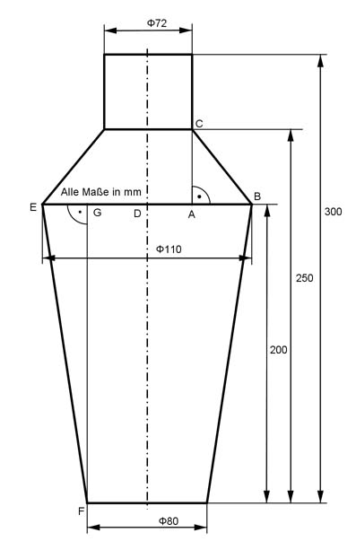

Aufgabe 280 Wie viel cm² Blech braucht man für die Herstellung des Kruges, wenn man für die Nahtstellen mit 5% Zuschlag rechnen muss?  A = 1,05 * (Kegelmantel K1+Kegelmantel K2+Zylindermantel Z + Kreis K) K1 = л * BC * (r1 + r2) Satz von Pythagoras im Dreieck ABC: DB = 110 mm/2 = 55 mm = r1 DA = 72 mm/2 = 36 mm = r2 AB = DB - DA = 55 mm - 36 mm = 19 mm AC = 250 mm - 200 mm = 50 mm BC² = AB² + AC² = 19² mm² + 50² mm² = 361 mm² + 2 500 mm² BC² = 2 861 mm² |√ BC = 53,5 mm K1 = л * 53,5 mm * (55 mm + 36 mm) = 15 287 mm² = 152,9 cm² K2 = л * EF * (r1 + r3) Satz von Pythagoras im Dreieck EFG: DE = 110 mm/2 = 55 m = r1 DG = 80 mm/2 = 40 mm = r3 EG = DE -DG = 55 mm - 40 mm = 15 mm FG = 200 mm EF² = FG² + EG² = 200² mm² + 15² mm² = 40 000 mm² + 225 mm² EF² = 40 225 mm² |√ EF = 200,56 mm K2 = л * 200,56 mm * (55 mm + 40 mm) = 59 827 mm² = 598,3 cm² Z = 2 * л * r2 * 50 mm = 2 * л * 36 mm * 50 mm = 11 304 cm² Z = 113 cm² K = л * r3² = л * 40² mm² = 5 024 mm² =50,2 cm² A = 1,05 * (152,9 cm² + 598,3 cm² + 113 cm² + 50,2 cm² = 914,4 cm²) A = 960,1 cm²